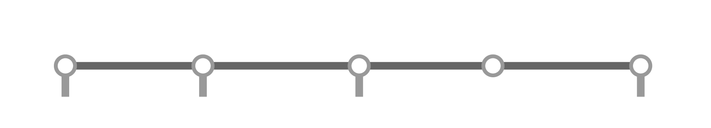

Complaint filed
at House
of Representatives
Senate conviction
(removal from office)
House justice
committee approval
Full House approval
(impeached)
Senate trial
By majority vote
Can come from a citizen or House member
By one-third of all members
(at least 106 of current 318 members)
By two-thirds majority
(at least 16 of 24 senators)

Impeachment process
Can come from a citizen or House member
Complaint filed
at House of Representatives
House committee approval
By majority vote
Full House approval
(impeached)
By one-third of all members
(at least 106 of current 318 members)
Senate trial
Senate conviction
(removal from office)
By two-thirds majority
(at least 16 of 24 senators)